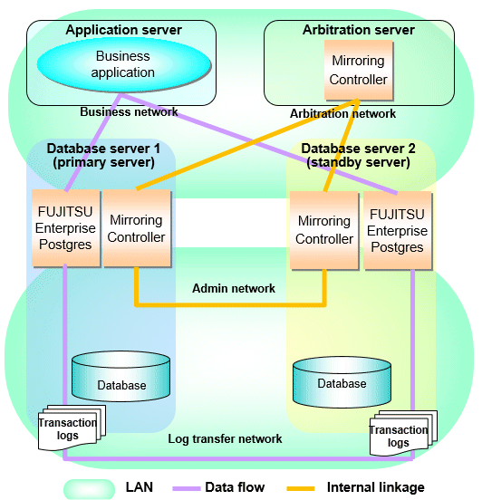

This section explains the products, features, and networks that are part of a database multiplexing system.
The following table shows the network types uses by database multiplexing systems.
Network type | Description |
|---|---|
Job network | Network between the application that accesses the database, and the database server. |
Arbitration network | Network used by the arbitration server to check the status of the primary server and standby server, and communicate with Mirroring Controller of the database servers. Additionally, if the job network is disconnected from outside, it can also be used as the arbitration network. Refer to "1.4 Security in Database Multiplexing" for details on network security. |
Admin network | Network used by the primary server and the standby server to monitor each other using Mirroring Controller, and to control Mirroring Controller of other servers. |
Log transfer network | Network used to transfer the transaction logs of the database, which is part of database multiplexing. |
Figure 1.5 System configuration for database multiplexing mode

The arbitration server is installed to check the database server status as a third party, and to perform fencing. Therefore, to obtain the intended benefits, consider the following.
Install the arbitration server on a different server to that of the database server.
For the arbitration network, use a network that will not be impacted by line faults or the load on the admin network or log transfer network. This is necessary to correctly determine issues on the admin network or log transfer network.
Point
The arbitration server can also be used as an application server. However, consider the server load.
It is recommended to link the arbitration server with other cluster systems, in order to provide redundancy.
Use the arbitration server in combination with the same version of FUJITSU Enterprise Postgres as that of the primary server and standby server.
The arbitration server can be built on a different platform to that of the database server.
Note
Because the ping command of the operating system is used for heartbeat monitoring of the database server, configure the network so that ICMP can be used on the admin network and the arbitration network.